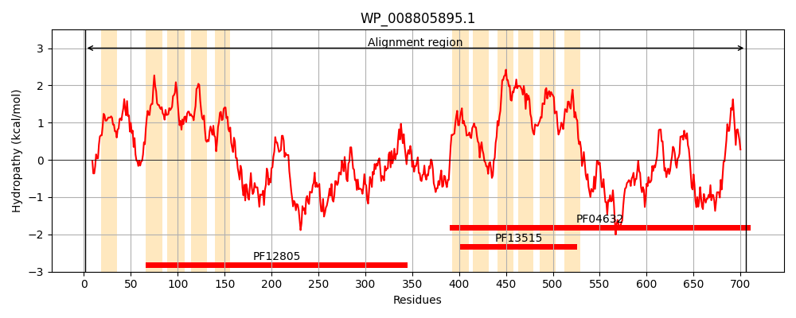
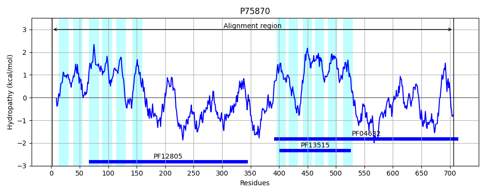
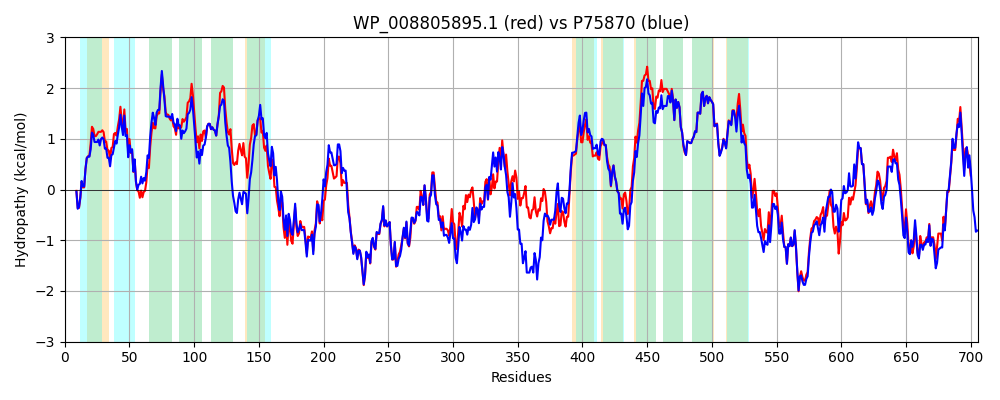

Hit Accession: P75870
Hit TCID: 2.A.85.1.1
Hit Description: gnl|BL_ORD_ID|11420 gnl|TC-DB|P75870|2.A.85.1.1 HYPOTHETICAL 81.7 KDA PROTEIN IN SULA-HELD INTERGENIC REGION - Escherichia coli.
Mach Len: 706
e:0.000000
Query TMS Count : 11
Hit TMS Count: 12
TMS-Overlap Score: 9.150000
Predicted Substrates:None
BLAST Alignment:
Score: 3057 , Bit scores: 1182 bits, E-value: 0.0e+00, Alignment length: 706, Percentage identity: 82
Query: 1 MISPLLRRYTWNSAWLYNVRIFIALCGTTLFPWWIGEVKLTIPLTLGVVAAALTDLDDRLTGRLRNLAITLVCFFIASASVELLFPWPPLFALGLTVSTIGFILLGGLGQRYATIAFGALLIAIYTMLGVTLYDHWYLQPLFLLAGAVWYNLLTLSGHLIFPIRPLQDNLARSYEQLARYLELKSRLFDPDLEDESQAPLYDLALANGQLVATLNQTKVSLLTRLRGDRGQRGTRRTLQYYFVAQDIHERASSSHIQYQTLRDQFRYSDVMFRFQRMLSMQAQACQKLSRAILLREPYQHDAHFERAFMHLDAALDRVRASGASDEQINALGFLLNNLRAIDAQLATIESVQTTAPAGSNTETLLADDRLGGLNDIWLRLRRNMSPESALFRHAVRMSLVLCAGYAFIQFTGLQHGYWILLTSLFVCQPNYNATRHRLALRIIGTLVGVAIGLPVLLLVPSIEGQLVLIVLTGVLFFAFRNVQYAHATMFITLLVLLCFNLLGEGFEVALPRIIDTLIGCAIAWAAVSFIWPDWKFRNLPRVLDRAMNANCRYLDAILEQYHQGRDNRLAYRVARRDAYNRDAELASVVSNLSTEPRADGAQRETAFRLLCLNHTFTSYISALGAHREKLSTPDILALLDDAVCYVDDALHHTPADEHRVQKSLTSLQSRIQHLEPRADSKEPLVLQQIGLLLALLPEICRLQQRV 706
M+SPLL+RYTWNSAWLY RIFIALCGTT FPWW+G+VKLTIPLTLG+VAAALTDLDDRL GRLRNL ITL CFFIASASVELLFPWP LFA+GLT+ST GFILLGGLGQRYATIAFGALLIAIYTMLG +LY+HWY QP++LLAGAVWYN+LTL GHL+FP+RPLQDNLAR YEQLARYLELKSR+FDPD+ED+SQAPLYDLALANG L+ATLNQTK+SLLTRLRGDRGQRGTRRTL YYFVAQDIHERASSSHIQYQTLR+ FR+SDV+FRFQR++SMQ QACQ+LSR ILLR+PYQHD HFERAF H+DAAL+R+R +GA + + LGFLLNNLRAIDAQLATIES Q A +N E LADD GL+DIWLRL R+ +PESALFRHAVRMSLVLC GYA IQ TG+ HGYWILLTSLFVCQPNYNATRHRL LRIIGTLVG+AIG+PVL VPS+EGQLVL+V+TGVLFFAFRNVQYAHATMFITLLVLLCFNLLGEGFEVALPR+IDTLIGCAIAWAAVS+IWPDW+FRNLPR+L+RA ANCRYLDAILEQYHQGRDNRLAYR+ARRDA+NRDAELASVVSN+S+EP RE AFRLLCLNHTFTSYISALGAHRE+L+ P+ILA LDDAVCYVDDALHH PADE RV ++L SL+ R+Q LEPRADSKEPLV+QQ+GLL+ALLPEI RLQ+++
Sbjct: 1 MLSPLLKRYTWNSAWLYYARIFIALCGTTAFPWWLGDVKLTIPLTLGMVAAALTDLDDRLAGRLRNLIITLFCFFIASASVELLFPWPWLFAIGLTLSTSGFILLGGLGQRYATIAFGALLIAIYTMLGTSLYEHWYQQPMYLLAGAVWYNVLTLIGHLLFPVRPLQDNLARCYEQLARYLELKSRMFDPDIEDQSQAPLYDLALANGLLMATLNQTKLSLLTRLRGDRGQRGTRRTLHYYFVAQDIHERASSSHIQYQTLREHFRHSDVLFRFQRLMSMQGQACQQLSRCILLRQPYQHDPHFERAFTHIDAALERMRDNGAPADLLKTLGFLLNNLRAIDAQLATIESEQAQALPHNNDENELADDSPHGLSDIWLRLSRHFTPESALFRHAVRMSLVLCFGYAIIQITGMHHGYWILLTSLFVCQPNYNATRHRLKLRIIGTLVGIAIGIPVLWFVPSLEGQLVLLVITGVLFFAFRNVQYAHATMFITLLVLLCFNLLGEGFEVALPRVIDTLIGCAIAWAAVSYIWPDWQFRNLPRMLERATEANCRYLDAILEQYHQGRDNRLAYRIARRDAHNRDAELASVVSNMSSEPNVTPQIREAAFRLLCLNHTFTSYISALGAHREQLTNPEILAFLDDAVCYVDDALHHQPADEERVNEALASLKQRMQQLEPRADSKEPLVVQQVGLLIALLPEIGRLQRQI 706 | Protein Hydropathy Plots: |
|---|
|  |  |
Pairwise Alignment-Hydropathy Plot:
|
|---|
|  |